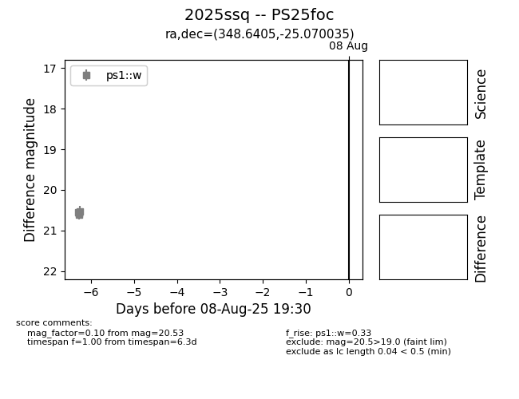

Target 2025ssq at 2025-08-10 05:46, see:
TNS: wis-tns.org/object/2025ssq
YSE: ziggy.ucolick.org/yse/transient_detail/2025ssq
alt names
2025ssq (yse,tns)
PS25foc (panstarrs)
coordinates:
equatorial (ra, dec) = (348.6405,-25.07004)
galactic (l, b) = (32.8644,-68.18699)
photometry
last ps1::w=20.53
4 ps1::w detections
